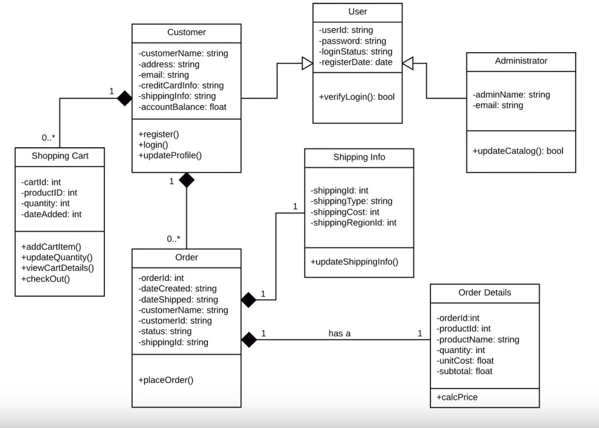

1.2. Lenguaje de modelado unificado: diagrama de clases.
El lenguaje unificado de modelado (UML, por sus siglas en inglés, Unified Modeling Language) es el lenguaje de modelado de sistemas de software más conocido y utilizado en la actualidad; está respaldado por el Object Management Group (OMG).
Es un lenguaje gráfico para visualizar, especificar, construir y documentar un sistema. UML ofrece un estándar para describir un "plano" del sistema (modelo), incluyendo aspectos conceptuales tales como procesos, funciones del sistema, y aspectos concretos como expresiones de lenguajes de programación, esquemas de bases de datos y compuestos reciclados.
Es importante remarcar que UML es un "lenguaje de modelado" para especificar o para describir métodos o procesos. Se utiliza para definir un sistema, para detallar los artefactos en el sistema y para documentar y construir. En otras palabras, es el lenguaje en el que está descrito el modelo.
Se puede aplicar en el desarrollo de software gran variedad de formas para dar soporte a una metodología de desarrollo de software (tal como el Proceso Unificado Racional, Rational Unified Process o RUP), pero no especifica en sí mismo qué metodología o proceso usar.
UML no puede compararse con la programación estructurada, pues UML significa Lenguaje Unificado de Modelado, no es programación, solo se diagrama la realidad de una utilización en un requerimiento. Mientras que programación estructurada es una forma de programar como lo es la orientación a objetos, la programación orientada a objetos viene siendo un complemento perfecto de UML, pero no por eso se toma UML solo para lenguajes orientados a objetos.
UML cuenta con varios tipos de diagramas, los cuales muestran diferentes aspectos de las entidades representadas.
Diagramas estructurales
Los diagramas estructurales muestran la estructura estática del sistema y sus partes en diferentes niveles de abstracción. Existen un total de siete tipos de diagramas de estructura:
Diagrama de clases
Los diagramas de clase son, sin duda, el tipo de diagrama UML más utilizado. Es el bloque de construcción principal de cualquier solución orientada a objetos. Muestra las clases en un sistema, atributos y operaciones de cada clase y la relación entre cada clase. En la mayoría de las herramientas de modelado, una clase tiene tres partes, nombre en la parte superior, atributos en el centro y operaciones o métodos en la parte inferior. En sistemas grandes con muchas clases relacionadas, las clases se agrupan para crear diagramas de clases. Las diferentes relaciones entre las clases se muestran por diferentes tipos de flechas.
Diagrama de componentes
Un diagrama de componentes muestra la relación estructural de los componentes de un sistema de software. Estos se utilizan principalmente cuando se trabaja con sistemas complejos que tienen muchos componentes. Los componentes se comunican entre sí mediante interfaces. Las interfaces se enlazan mediante conectores.
Diagrama de despliegue
Un diagrama de despliegue muestra el hardware de su sistema y el software de ese hardware. Los diagramas de implementación son útiles cuando la solución de software se despliega en varios equipos, cada uno con una configuración única.
Diagrama de objetos
Los diagramas de objetos, a veces denominados diagramas de instancia, son muy similares a los diagramas de clases. Al igual que los diagramas de clases, también muestran la relación entre los objetos, pero usan ejemplos del mundo real. Se utilizan para mostrar cómo se verá un sistema en un momento dado. Debido a que hay datos disponibles en los objetos, a menudo se utilizan para explicar relaciones complejas entre objetos.
Diagrama de paquetes
Los diagramas de paquetes representan las dependencias entre los paquetes de un modelo. Es decir, muestra como un sistema esta modelado en agrupaciones lógicas y las dependencias entre esas agrupaciones. Dado que los paquetes son a menudo asociados con un directorio, los diagramas de paquetes muestran como se relacionan los distintos directorios de un sistema.
